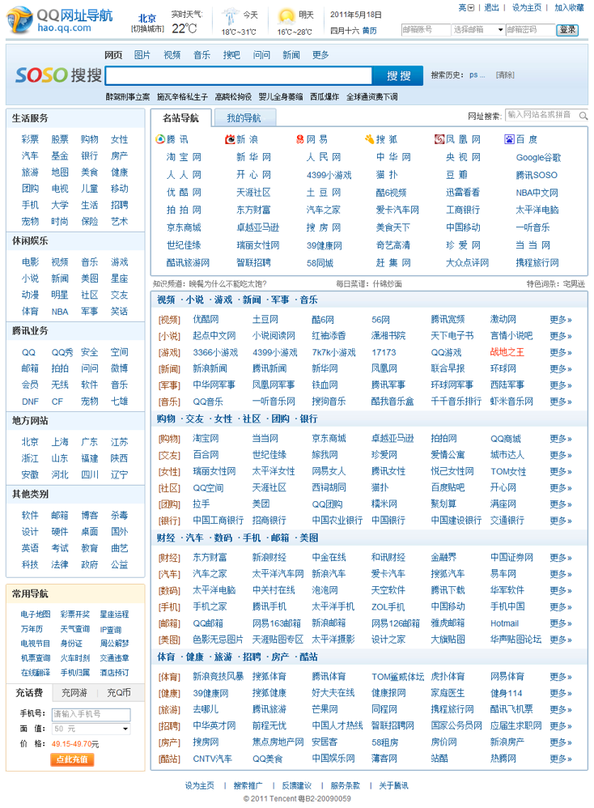
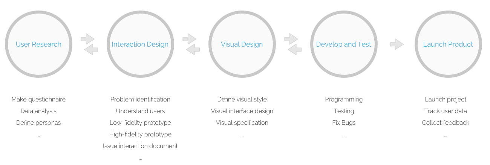
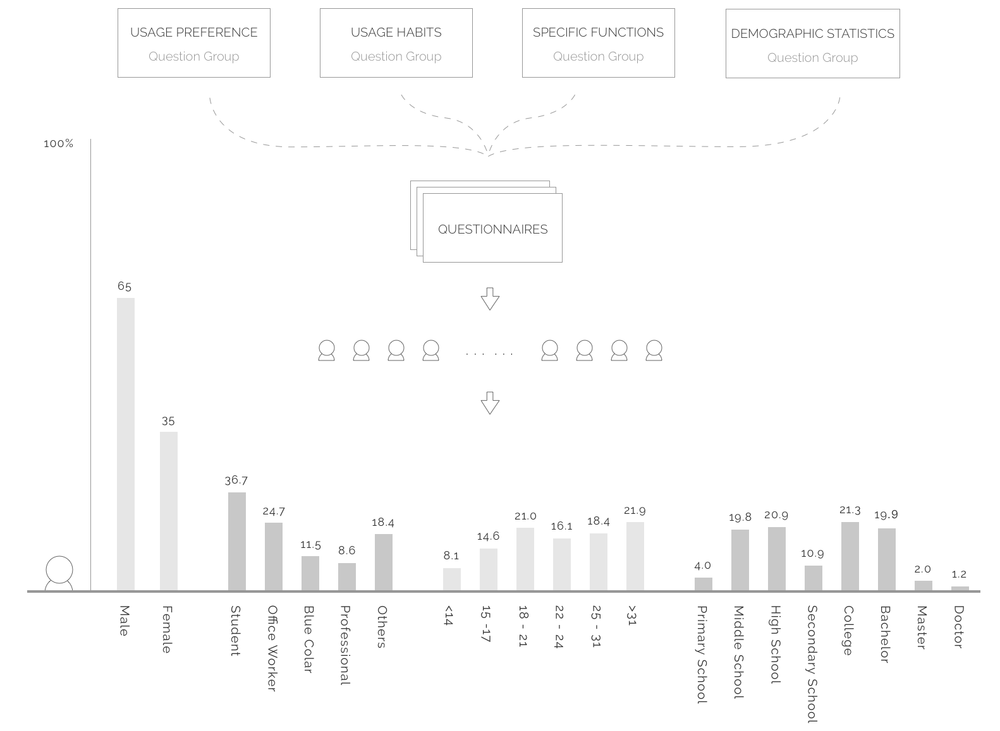
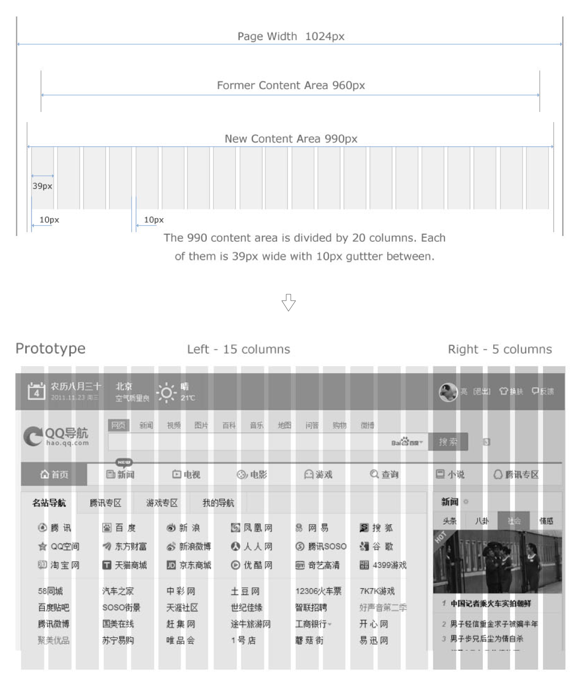
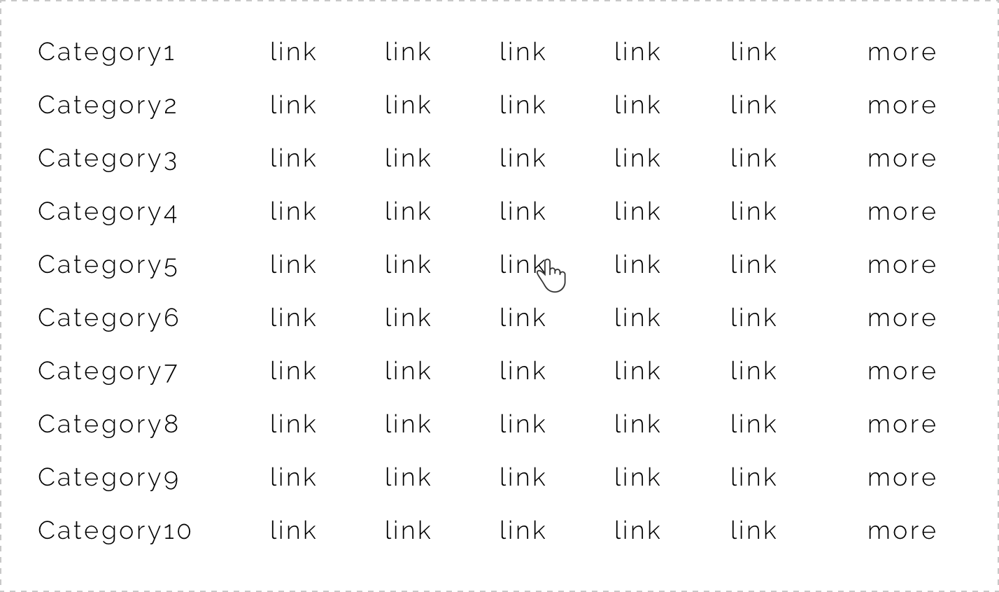
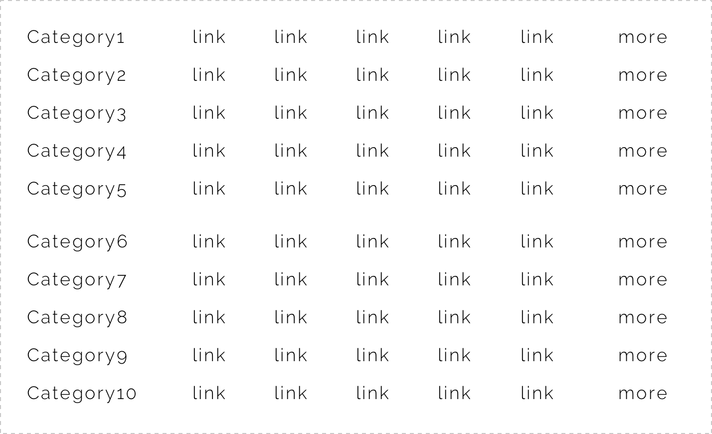
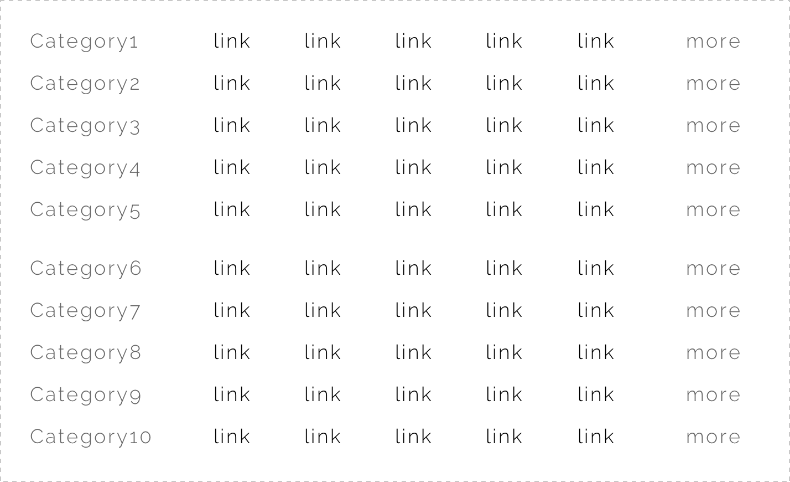
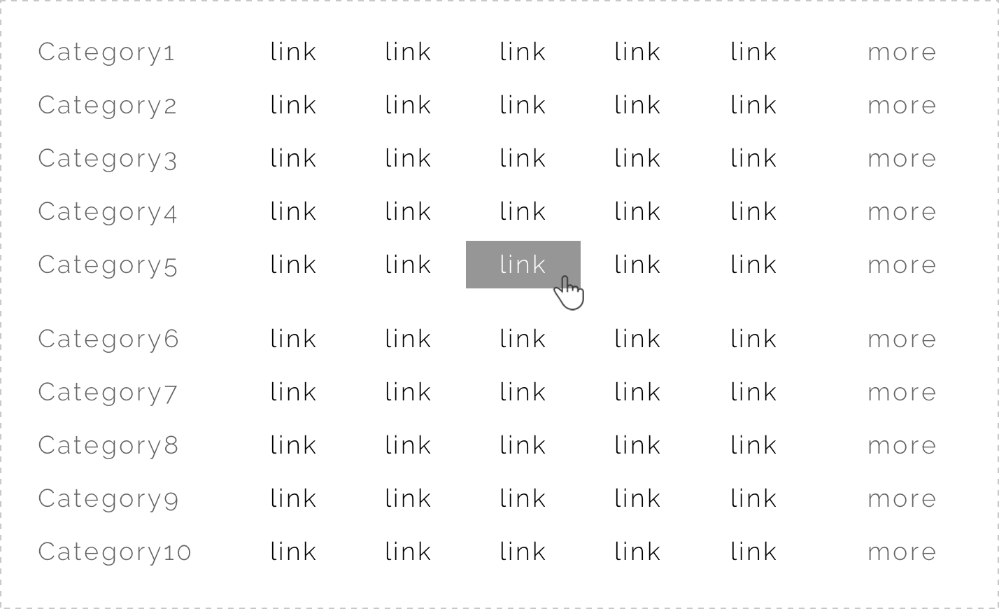

BACKGROUND
This web directory, hao.qq.com, belongs to Tencent Company, China. It provides the access of most popular websites and contents. But its design was outdated and not user-friendly because of lacking of maintaining for a period of time. So after talking with the product manager, we all agreed that this website needs a fully redesign.
In this case, I demonstrate the process of redesign of the HOMEPAGE by employing user research, grid-based design approach, flat design to improve the user experience.
Original Homepage
REDESIGN GOAL
A well structured directory website providing efficient and enjoyable experience.
WORK PROCESS
First, we started with user research to better understand our potential users. Then by employing grid-based approach, we redesigned the layout of homepage.
After that, we focused on every design details, made hi-fi prototypes, did user testing and did quick iteration. And then the visual designer will take charge, make the final visual design.
Finally, the programmers will turn our design into real pages and launch them online. But that is not over, we have to keep tracking the data, collect feedbacks from users for further improvement.
Work Process
As an interaction designer, I am in charge of the first two steps, user research and interaction, and left other jobs to my professional colleagues. But I am obliged to make sure the design been well realized. So I follow every step in this flow, provide supports to my colleagues and make necessary changes.
USER RESEARCH
Make questionnaires
We wanted to figure out who our users are, how they use the website and why they use it. So the questionnaire was designed to four parts, usage preference, using habits, specific functions and demographic statistics, with specific questions for each part.
Distribute questionnaires
With the help of our company’s powerful PC client software QQ which is the most popular Instant Message (IM) software in China with more than 700 million users, we could sent the online questionnaires directly to our potential users though QQ tips. Half a million questionnaires were sent and 7621 effective responses were received.
Feedback and Analysis
With a total of 7621 valid responses for analysis, we used KANO model to find the attributes which are perceived to be important. Some results were shown in right figure. This information is very helpful for us to redesign not only the home page but the whole website. It help us to better understand our users and reconsider our product strategy.
User Research Process
LAYOUT DESIGN
To make our website more structured, consistent and logical, I introduced grid-based design approach. This approach is widely used in many famous websites such as Yahoo, New York TImes and so on. Well designed grid systems can help the website not only more beautiful and legible, but more usable.
The prior width of home page is 1024px and the content area is 960px. I expended the content area to 990px which is almost the maximum visual area in screen of 1024*768 resolution. And with the rapid development of high-resolution display technique, it is safe to design an even larger area. But for now we will only use 990px width as safe content area.
ONE EXAMPLE - REDESIGN WEBSITE LIST
Problem
The website list is not clear and need to be redesigned. Because so many website links crowded in a limited area, users often lost their focus when they try to find a certain link.
For example, when you want to click a link, you will probably lost the position of your mouse pointer because so many links distracted your attention.
0. Original design
Solution
Make the hierarchy more clearly by adding blank space, weaken less priority elements, strengthen feedback.
According to Fitts Law, we know that The time to acquire a target is a function of the distance to and size of the target which basically means the bigger your click area is, the faster it could be clicked. But of course it does not mean we should make it as bigger as possible. We should also consider athletics and usability. See my solution below.
1. Leave enough blank space between every five rows to better organize website rows.
2. Weaken the “category” and “more” links. Strengthen the website links.
3. Enlarge the feedback area and add background color.
4. Add background color of the row where the mouse pointer rests.
Feedback
CTR (Click Through Rate) increased up to 70% from 16.7% to 28.5%.